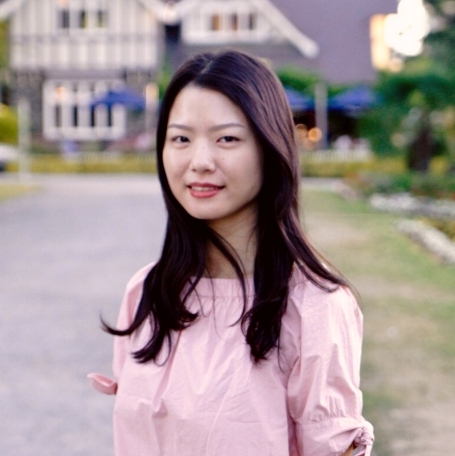

Cheng ChenAssistant Professor |
 |


Biography
I am currently an Assistant Professor at the Department of Electrical and Computer Engineering, the University of Hong Kong. I am the Principal Investigator (PI) of the Multimodal Health Intelligence Lab @ HKU. Before joining HKU, I was a postdoctoral research fellow at the Center for Advanced Medical Computing and Analysis, Harvard Medical School/Massachusetts General Hospital, working with Prof. Quanzheng Li. I received my Ph.D. from the Department of Computer Science and Engineering, The Chinese University of Hong Kong, supervised by Prof. Pheng-Ann Heng. Previously, I received my M.S. from Johns Hopkins University, and B.S. from Zhejiang University, both with a specialization in biomedical engineering.
My research interests lie at the intersection of artificial intelligence and healthcare, focusing on integrating multimodal and heterogeneous medical data for precision and personalized disease diagnosis, prognosis, and treatment decision-making. Our research focus includes: 1) medical VLMs/MLLMs; 2) biomedical data generation and medical world models; 3) agentic AI systems for intelligent healthcare; 4) time-series data analysis.
*Opening!* I am actively looking for self-motivated Ph.D. students, research assistants, and visiting students to join my group. Please feel free to drop me an email (cchen@eee.hku.hk) with your CV and transcripts if you are interested. HKU students are also welcome to join our group for research projects.
News
- [07/2026] To served as SPC of AAAI 2027.
- [06/2026] Our paper on unified medical reasoning won the IEEE IVMSP 2026 Best Paper Award! Congrats to Luyao and all co-authors!
- [06/2026] One paper accepted by ECCV 2026. Congrats to Luyao and all co-authors!
- [06/2026] Two papers accepted by MICCAI 2026. Congrats to Juzheng, Yuchen, Nuoer, and all co-authors!
- [05/2026] Congrats to Zean Chen on being awarded the Undergraduate Research Fellowship Programme.
- [05/2026] Two papers accepted by ICML 2026. Congrats to Luyao, Weiren, and Dong Yi!
- [02/2026] One paper accepted by Medical Image Analysis. Congrats to Juzheng!
- [01/2026] One paper accepted by ICLR 2026. Congrats to Luyao!
- [01/2026] Serve as Area Chair of MICCAI 2026, MIDL 2026.
- [11/2025] Three papers about medical multimodal learning and foundation model adaptation accepted by AAAI 2026 (one oral).
- [06/2025] Two papers accepted by MICCAI 2025. One paper accepted by IEEE TMI.
- [05/2025] Two papers are accepted by Nature Communications.
- [04/2025] Two papers are accepted by IEEE JBHI.
- [01/2025] We are organizing a special issue at IEEE JBHI. Call for submissions!
- [09/2024] World’s Top 2% Scientists by Stanford University.
- [08/2024] Our paper on modality-agnostic SAM adaptation was accepted by Medical Image Analysis Special Issue.
- [05/2024] Three papers are accepted by MICCAI 2024 (two early accept).
- [02/2024] Serve as Area Chair of MICCAI 2024.
- [09/2023] Our paper on uncertainty estimation was accepted by NeurIPS 2023.
- [07/2023] One paper on causality-inspired semi-supervised learning was accepted by ICCV 2023.
- [05/2023] Our TMI paper on unsupervised domain adaptation has been identified as ESI highly cited paper.
- [05/2023] Three papers are early accepted to MICCAI 2023 with one oral.
- [03/2023] Paper on personalized federated learning in medical imaging was accepted by IEEE TMI.
- [02/2023] Paper on diffusion model based brain midline shift quantification was accepted by IPMI.
- [08/2022] Proud to receive the certificate of IEEE TMI Distinguished Reviewer.
- [07/2022] Paper on dynamic learning rate for test-time adaptation was accepted by IEEE TMI.
- [05/2022] Two papers on model generalization were early accepted by MICCAI'22.
- [12/2021] Our paper on single domain generalization for segmentation was accepted by AAAI'22.
- [10/2021] Paper on leveraing privileged multimodal knowledge for unimodal segmentation was accepted by IEEE TMI.
- [09/2021] We won the champion of 2021 MICCAI Federated Brain Tumor Segmentation Challenge (FeTS).
- [23/06/2021] Passed the oral defense and became a Dr.!
- [05/2021] One paper on source-free unsupervised domain adaptation was early accepted by MICCAI'21.
- [03/2021] Our paper on federated domain generalization (FedDG) was accepted by CVPR'21.
- [03/2021] Our paper on relating temporal cues for surgical workflow recognition was accepted to IEEE TMI.
- [02/2020] One paper on unsupervised domain adaptation was accepted by IEEE TMI.
- [08/2019] One paper on robust multimodal learning was accepted by MICCAI'19, with a travel award.
Selected Publications [Find full list at Google Scholar]
† indicates corresponding authorship and * indicates co-first authorship.
- REFLEX-Med: Reinforcement with Label-Free Explainability for Unified Medical Reasoning
Luyao Tang, Zheyuan Cai, Qinong Tian, Zi Li, Quande Liu, Yue Huang, Kyongtae T Bae, Cheng Chen†
15th IEEE Image, Video, and Multidimensional Signal Processing Workshop (IEEE IVMSP), 2026. [Best Paper Award] - Generalized Biomedicine Discovery
Luyao Tang, Yingkai Yang, Hanqi Chen, Jiewei Zheng, Chaoqi Chen, Cheng Chen†
European Conference on Computer Vision (ECCV), 2026. - SynerMedGen: Synergizing Medical Multimodal Understanding with Generation via Task Alignment
Weiren Zhao, Yi Dong, Cheng Chen†
Forty-third International Conference on Machine Learning (ICML), 2026. - CoGe-GCD: Reframing Generalized Category Discovery with Compositional Generalization
Luyao Tang, Jiewei Zheng, Kunze Huang, Chaoqi Chen, Yue Huang, Cheng Chen†
Forty-third International Conference on Machine Learning (ICML), 2026. - Bures-Isotropy Alignment: Manifold Learning of Generalized Category Discovery
Luyao Tang, Kunze Huang, Chaoqi Chen, Cheng Chen†
The Fourteenth International Conference on Learning Representations (ICLR), 2026. - SAM-Driven Cross Prompting with Adaptive Sampling Consistency for Semi-supervised Medical Image Segmentation
Juzheng Miao, Cheng Chen†, Yuchen Yuan, Quanzheng Li, Pheng-Ann Heng
Medical Image Analysis (MedIA), 2026. - Tackling Dual-stage Missing Modalities in Brain Tumor Segmentation via Robust Modality Reconstruction and Prompt-guided Modality Adaptation
Yunpeng Zhao*, Cheng Chen*, Qing You Pang, Yibing Fu, Quanzheng Li, Carol Tang, Beng Ti Ang, Yueming Jin
Proceedings of the AAAI Conference on Artificial Intelligence (AAAI), 2026. - Mask SAM 3D for Coronary Artery and Plaque Segmentation in CCTA Images
RenZhe Tu, CongYu Tian, LinYuan Wang, YongZhi Deng, Cheng Chen†, WeiXin Si†, ShanShan Wang
International Journal of Computer Assisted Radiology and Surgery (IJCARS), 2026. - Bridging Vision Foundation Model Priors with CLIP for Spatial-aware Few-shot Anomaly Detection in Medical Images
Juzheng Miao, Yuchen Yuan, Cheng Chen†, Pheng-Ann Heng
Medical Image Computing and Computer Assisted Intervention (MICCAI), 2026. - Enhancing Diagnostic Accuracy in Rare and Common Fundus Diseases with a Knowledge-rich Vision-Language Model
Meng Wang, Tian Lin, Aidi Lin, Kai Yu, Yuanyuan Peng, Lianyu Wang, Cheng Chen, et al.
Nature Communications, 2025. - Towards Fair Decentralized Benchmarking of Healthcare AI Algorithms with the Federated Tumor Segmentation (FeTS) Challenge
Maximilian Zenk, Ujjwal Baid, Sarthak Pati, Akis Linardos, ..., Cheng Chen, Qi Dou, Pheng-Ann Heng, et al.
Nature Communications, 2025. (Challenge summary) - Multi-organ Segmentation from Partially Labeled and Unaligned Multi-modal MRI in Thyroid-associated Orbitopathy
Cheng Chen*, Min Deng*, Yuan Zhong, Jinyue Cai, Karen Kar Wun Chan, Qi Dou, Kelvin Kam Lung Chong, Pheng-Ann Heng, Winnie Chiu-Wing Chu
IEEE Journal of Biomedical and Health Informatics (IEEE JBHI), 2025. - GM-ABS: Promptable Generalist Model Drives Active Barely Supervised Training in Specialist Model for 3D Medical Image Segmentation
Zhe Xu, Cheng Chen, Donghuan Lu, Jinghan Sun, Dong Wei, Yefeng Zheng, Quanzheng Li, Raymond Kai-Yu Tong
IEEE Transactions on Medical Imaging (IEEE TMI), 2025. - MA-SAM: Modality-agnostic SAM Adaptation for 3D Medical Image Segmentation
Cheng Chen, Juzheng Miao, Dufan Wu, Zhiling Yan, Sekeun Kim, Jiang Hu, Aoxiao Zhong, Zhengliang Liu, Lichao Sun, Xiang Li, Tianming Liu, Pheng-Ann Heng, Quanzheng Li
Medical Image Analysis (MedIA), 2024. - Cross Prompting Consistency with Segment Anything Model for Semi-supervised Medical Image Segmentation
Juzheng Miao, Cheng Chen†, Keli Zhang, Jie Chuai, Quanzheng Li, Pheng-Ann Heng
Medical Image Computing and Computer Assisted Intervention (MICCAI), 2024. - Causal Effect Estimation on Imaging and Clinical Data for Treatment Decision Support of Aneurysmal Subarachnoid Hemorrhage
Wenao Ma, Cheng Chen, Yuqi Gong, Nga Yan Chan, Meirui Jiang, Calvin Hoi-Kwan Mak, Jill M. Abrigo, Qi Dou
IEEE Transactions on Medical Imaging (IEEE TMI), 2024. - FM-OSD: Foundation Model-Enabled One-Shot Detection of Anatomical Landmarks
Juzheng Miao, Cheng Chen†, Keli Zhang, Jie Chuai, Quanzheng Li, Pheng-Ann Heng
Medical Image Computing and Computer Assisted Intervention (MICCAI), 2024. - FM-ABS: Promptable Foundation Model Drives Active Barely Supervised Learning for 3D Medical Image Segmentation
Zhe Xu, Cheng Chen, Donghuan Lu, Jinghan Sun, Dong Wei, Yefeng Zheng, Quanzheng Li, Raymond Tong
Medical Image Computing and Computer Assisted Intervention (MICCAI), 2024. - Contrastive Masked Image-Text Modeling for Medical Visual Representation Learning
Cheng Chen, Aoxiao Zhong, Dufan Wu, Jie Luo, Quanzheng Li
Medical Image Computing and Computer Assisted Intervention (MICCAI), 2023. [Oral] - Uncertainty Estimation for Safety-critical Scene Segmentation via Fine-grained Reward Maximization
Hongzheng Yang*, Cheng Chen*, Yueyao Chen, Markus Scheppach, Hon Chi Yip, Qi Dou
Thirty-seventh Conference on Neural Information Processing Systems (NeurIPS), 2023. - SATTA: Semantic-Aware Test-Time Adaptation for Cross-Domain Medical Image Segmentation
Yuhan Zhang, Kun Huang, Cheng Chen†, Qiang Chen, Pheng-Ann Heng
Medical Image Computing and Computer Assisted Intervention (MICCAI), 2023. - CauSSL: Causality-inspired Semi-supervised Learning for Medical Image Segmentation
Juzheng Miao, Cheng Chen, Furui Liu, Hao Wei, Pheng-Ann Heng
International Conference on Computer Vision (ICCV), 2023. - Treatment Outcome Prediction for Intracerebral Hemorrhage via Generative Prognostic Model with Imaging and Tabular Data
Wenao Ma, Cheng Chen, Jill Abrigo, Calvin Hoi-Kwan Mak, Yuqi Gong, Nga Yan Chan, Chu Han, Zaiyi Liu, Qi Dou
Medical Image Computing and Computer Assisted Intervention (MICCAI), 2023. - Diffusion Model based Semi-supervised Learning on Brain Hemorrhage Images for Efficient Midline Shift Quantification
Shizhan Gong, Cheng Chen, Yuqi Gong, Nga Yan Chan, Wenao Ma, Calvin Mak, Jill Abrigo, Qi Dou
International Conference on Information Processing in Medical Imaging (IPMI), 2023. [Oral] - IOP-FL: Inside-outside Personalization of Federated Medical Image Segmentation
Meirui Jiang, Yongzheng Yang, Cheng Chen, Qi Dou
IEEE Transactions on Medical Imaging (IEEE TMI), 2023. - DLTTA: Dynamic Learning of Test-time Adaptation for Cross-domain Medical Images
Hongzheng Yang, Cheng Chen†, Meirui Jiang, Quande Liu, Jianfeng Cao, Pheng-Ann Heng, Qi Dou
IEEE Transactions on Medical Imaging (IEEE TMI), 2022. - Single-domain Generalization in Medical Image Segmentation via Test-time Adaptation from Shape Dictionary
Quande Liu, Cheng Chen, Qi Dou, Pheng-Ann Heng
Proceedings of the AAAI Conference on Artificial Intelligence (AAAI), 2022. - Federated Learning Enabling Big Data for Cancer Detection
Sarthak Pati, Ujjwal Baid, ..., Cheng Chen, et al.
Nature Communications, 2022. - Test-time Adaptation with Calibration of Medical Image Classification Nets for Label Distribution Shift
Wenao Ma, Cheng Chen, Shuang Zheng, Jing Qin, Huimao Zhang, Qi Dou
Medical Image Computing and Computer Assisted Intervention (MICCAI), 2022. - Learning with Privileged Multimodal Knowledge for Unimodal Segmentation
Cheng Chen, Qi Dou, Yueming Jin, Quande Liu, Pheng-Ann Heng
IEEE Transactions on Medical Imaging (IEEE TMI), 2021. - Source-Free Domain Adaptive Fundus Image Segmentation with Denoised Pseudo-Labeling
Cheng Chen, Quande Liu, Yueming Jin, Qi Dou, Pheng-Ann Heng
Medical Image Computing and Computer Assisted Intervention (MICCAI), 2021. - FedDG: Federated Domain Generalization on Medical Image Segmentation via Episodic Learning in Continuous Frequency Space
Quande Liu, Cheng Chen, Jing Qin, Qi Dou, Pheng-Ann Heng
IEEE Conference on Computer Vision and Pattern Recognition (CVPR), 2021. - Unsupervised Bidirectional Cross-Modality Adaptation via Deeply Synergistic Image and Feature Alignment for Medical Image Segmentation
Cheng Chen, Qi Dou, Hao Chen, Jing Qin, Pheng-Ann Heng
IEEE Transactions on Medical Imaging (IEEE TMI), 2020. [ESI Highly Cited Paper] - Robust Multimodal Brain Tumor Segmentation via Feature Disentanglement and Gated Fusion
Cheng Chen, Qi Dou, Yueming Jin, Hao Chen, Jing Qin, Pheng-Ann Heng
Medical Image Computing and Computer Assisted Intervention (MICCAI), 2019. [Graduate Student Travel Award] - Synergistic Image and Feature Adaptation: Towards Cross-Modality Domain Adaptation for Medical Image Segmentation
Cheng Chen, Qi Dou, Hao Chen, Jing Qin, Pheng-Ann Heng
Proceedings of the AAAI Conference on Artificial Intelligence (AAAI), 2019. [Oral; Student Scholarship] - Semantic-Aware Generative Adversarial Nets for Unsupervised Domain Adaptation in Chest X-ray Segmentation
Cheng Chen, Qi Dou, Hao Chen, Pheng-Ann Heng
International Workshop on Machine Learning in Medical Imaging (MLMI), 2018. [Oral]
Patent
-
Apparatus and method for motion tracking of at least a portion of a limb.
Cheng Chen, Jim Wang.
WO Patent WO2017005591A1, 2017.
Students
Current Students
- Luyao Tang (Mphil at XMU) (Ph.D. Student, 2025-)
- Zi Li (Mphil at DUT) (Ph.D. Student, 2025-)
- Weiren Zhao (BSc at UESTC) (Ph.D. Student, 2025-)
- Yi Dong (BSc at CUHK) (Ph.D. Student, 2025-)
- Yunpeng Zhao (M.Eng. at NUS) (Ph.D. Student, 2026-)
- Tianyang Cao (M.Eng. at ICL) (Ph.D. Student, 2026-)
- Xinhe Shi (BSc at ZJU) (Ph.D. Student, 2026-)
RA/Intern
- Yanan Wang (PhD at Fudan University) (RA, 2026-)
- Shaoguang Wang (Mphil at HKUST(GZ)) (RA, 2026-) (w/ Feng Wang)
- Zean Chen (UG student at HKU) (Intern, 2026-)
- Xiaotian Hu (UG student at Beihang) (Intern, 2026-)
Honors & Awards
- 2026Best Paper Award, IEEE Image, Video, and Multidimensional Signal Processing Workshop (IEEE IVMSP)
- 2026Best Paper Award, Frames to Stories (F2S) Workshop at ICML
- 2025 & 2024World's Top 2% Scientists on Stanford List
- 2025 & 2024IEEE TMI Distinguished Reviewer, Platinum Level
- 2023Global Top 80 Chinese Young Female Scholars in Artificial Intelligence
- 2023ESI Highly Cited Paper (First author)
- 2021Winner, MICCAI Federated Brain Tumor Segmentation Challenge
- 2019AAAI Student Scholarship (First author)
- 2019MICCAI Graduate Student Travel Award (First author)
Professional Committees & Service
Editorial & Conference Roles
- Guest Associate Editor, IEEE JBHI Special Issue on Synergizing Multi-modal Agents and Large Foundation Models for Healthcare, 2025
- Associate Editor, Frontiers in Radiology, 2021-Present
- Area Chair, MICCAI, 2024-2026
- Area Chair, MIDL, 2026
- Senior Program Committee, AAAI, 2027
- Co-organizer, HKU Medical Imaging AI Summit, 2024 & 2025
Journal Reviewer
- Nature Communications (Nat. Commun.)
- IEEE Transactions on Pattern Analysis and Machine Intelligence (IEEE TPAMI)
- IEEE Transactions on Medical Imaging (IEEE TMI)
- IEEE Transactions on Image Processing (IEEE TIP)
- IEEE Transactions on Neural Networks and Learning Systems (IEEE TNNLS)
- IEEE Journal of Biomedical and Health Informatics (IEEE JBHI)
- International Journal of Computer Vision (IJCV)
- Medical Image Analysis (MedIA)
- Pattern Recognition (PR)
Conference Reviewer
- International Conference on Medical Image Computing and Computer-Assisted Intervention (MICCAI)
- Conference on Neural Information Processing Systems (NeurIPS)
- International Conference on Learning Representations (ICLR)
- International Conference on Machine Learning (ICML)
- AAAI Conference on Artificial Intelligence (AAAI)
- International Joint Conference on Artificial Intelligence (IJCAI)
- IEEE/CVF Conference on Computer Vision and Pattern Recognition (CVPR)
- IEEE/CVF International Conference on Computer Vision (ICCV)
- European Conference on Computer Vision (ECCV)
Teaching
Artificial Intelligence in Biomedical Engineering
Advancements in Biomedical Engineering (Guest Lecture)